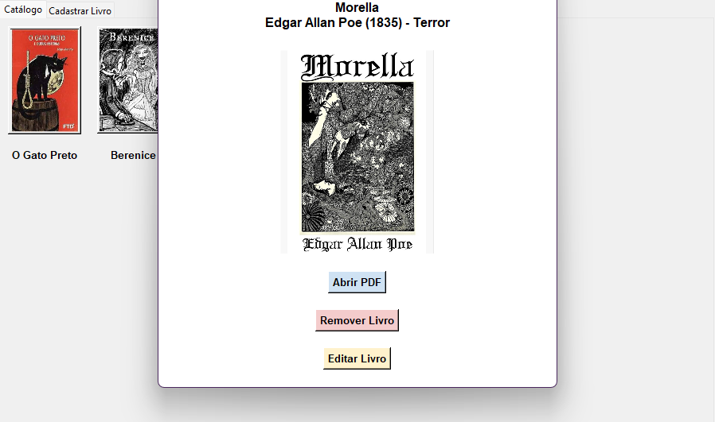
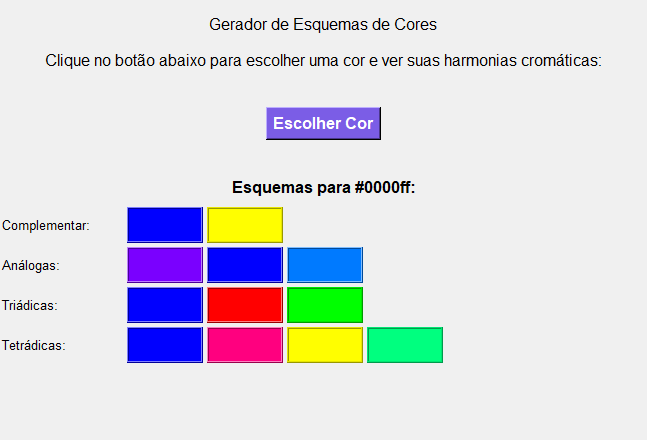
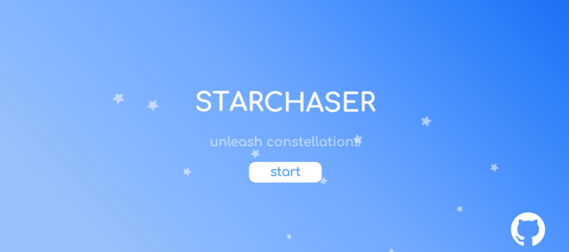
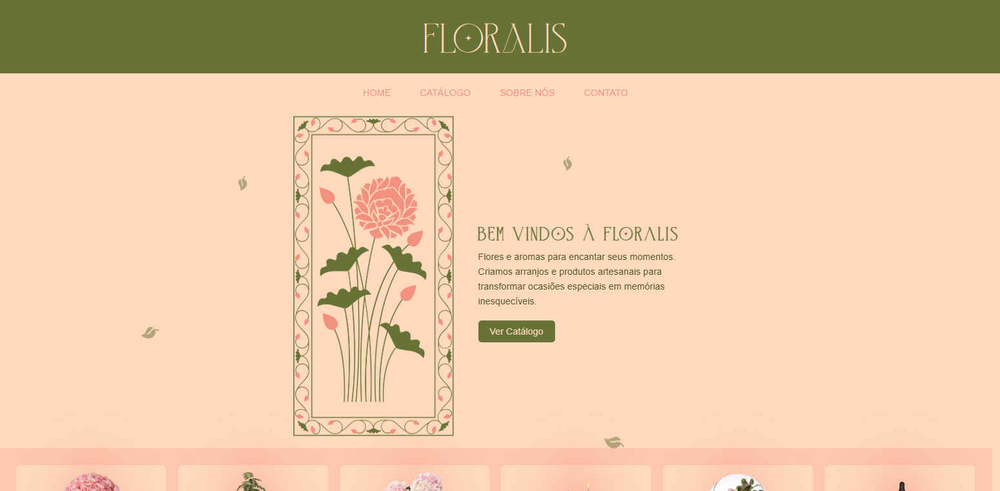
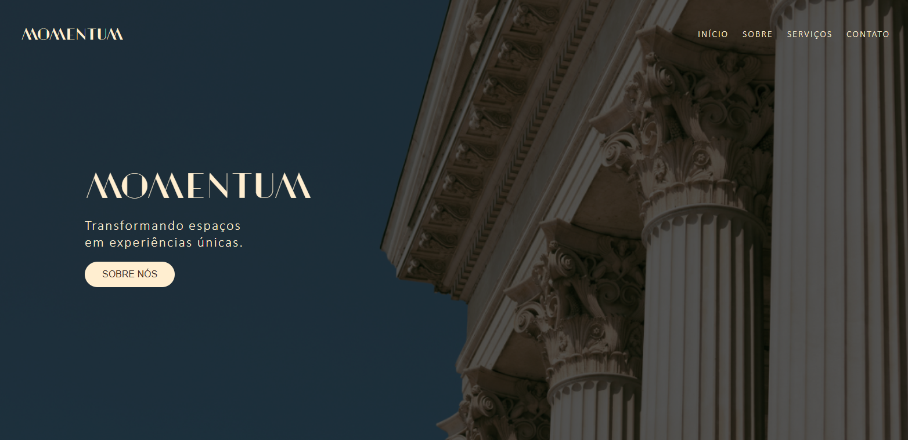

Sobre Mim
Sou estudante da Faculdade de Tecnologia de Franco da Rocha - Giuliano Cecchettini (FATEC) e curso Desenvolvimento de Software Multiplataforma. Atuo com Desenvolvimento Front-End Júnior, com sólida base em HTML, CSS e JavaScript, tenho experiência prática em projetos utilizando React para criação de interfaces dinâmicas e responsivas.
Também possuo conhecimentos em Python, incluindo o desenvolvimento de interfaces gráficas com Tkinter, o que amplia minha visão sobre diferentes ramos da programação.
Tenho experiência e noções em UX e UI, aplicando conceitos de usabilidade e design para desenvolver soluções digitais intuitivas e funcionais. Estou em constante aprendizado e motivada a evoluir profissionalmente, contribuindo em projetos que valorizem a experiência do usuário e boas práticas de desenvolvimento.
Selos de Proficiência

Projetos

Biblioteca Digital
Projeto em Python que implementa um catálogo digital de livros, utilizando SQLite para armazenamento e Tkinter para interface gráfica.
Ver no GitHub
Gerador de Esquemas Cromáticos
Programa em Python que gera esquemas cromáticos a partir de uma cor escolhida pelo usuário, exibindo combinações de forma simples e visual.
Ver no Gitub
Minigame Starchaser
Minigame interativo, conecte estrelas para formar constelações, criado com HTML, CSS e JavaScript.
Ver no GitHub Pages
Floralis Website
Website de uma floricultura fictícia, criado com o propósito de ser utilizado no portfólio e para demonstrar habilidades em HTML, CSS e JavaScript.
Ver no GitHub Pages
Momentum Website
Website fictício de uma empresa de arquitetura e design de ambientes, desenvolvido para compor portfólio e demonstrar habilidades em HTML, CSS e JavaScript.
Ver no GitHub Pages